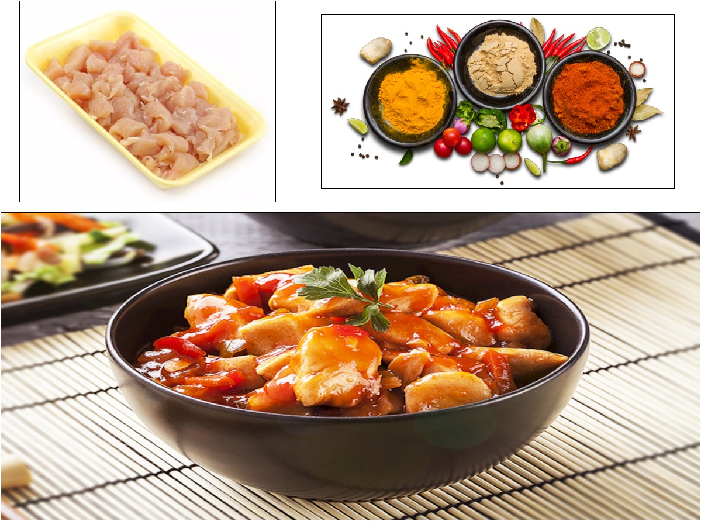

INGREDIENTES
- 2 colheres (sopa) de azeite de oliva
- 2 cebolas médias cortadas em cubos
- 2 dentes de alho esmagados
- 500 g de filé de frango sem pele e cortado em cubos
- sal a gosto
- 1 pimentão verde cortado em cubos
- 1 pimentão vermelho cortado em cubos
- 1 pimentão amarelo cortado em cubos
- 1 xícara (chá) de cogumelos em conserva cortados ao meio
- 1/4 xícara de molho shoyu
- 1 colher (sopa) de maisena
- 1/2 xícara (chá) de água
- 2 colheres (sopa) de amendoim torrado